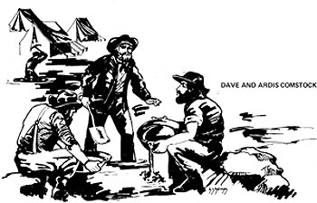

Our place is located approximately five miles from the towns of Grass Valley and Nevada City, two of the earliest and most important gold mining centers in California. We're about two and a half hours' driving time from Oakland and Berkeley and another 20 minutes from San Francisco,At our elevation of about 3,000 feet,we have a foot or two of snow in the winter (up to five feet in unusual years) and summer temper-
atures in the 90's.
The area-especially the towns-looks a lot like New England and is the scene of most of my watercolors Although we had a large vegetable garden-about half an acre-last year and will continue to grow a good deal of our food, we don't intend to farm for a livelihood. Most of our income is from my free-lance work as a book designer and artist, done by mail for clients in California, Colorado and Hawaii. I'd expected to have only a modest amount of such employment when we moved to the country but the fact is that I've had to refuse assignments to leave myself time for other activities. Ardis (a newcomer to the graphic arts) has helped me on some of my jobs and says she enjoys even the tedious chores.
Several years ago we bought nine and a half acres bordering Tahoe National Forest, and in the spring of 1970 acquireda tract of the same size that adjoined our land on the south. That same year we had a well drilled on the first parcel (located water at 85 feet and carried on until we hit bedrock110 feet down). In 1971, just before we moved up here, Ardis and I built a pump house over the shaft and installed the pump, storage tank and electrical generator. The flow from this system is hardly impressive (about 1-1/3 gallons a minute or 80 an hour) but it never falters . . . even after nine hours of steady pumping. We've had water here when other wells went dry. (Of course, we spent some time with pump experts beforehand to design a setup that wouldn't drain the well faster than it can fill. Happily, the right equipment the smallest unit made-was also the least expensive.) Our 5 kw generator, which is mounted on a trailer, was purchased secondhand from a newspaper classified ad for $500 . . . and will not only power the water pump but provide enough electricity for our house both during and after construction.
In the summer of 1972, George, Ardis' next-to oldest son, converted the machine from gasoline to propane. The conversion kit ($50.00 from the generator's manufacturer) took about two hours to install and worked perfectly on the first try. The propane is delivered by truck and is the only utility for which we pay . . . all others are derived from that source. The fuel is contained in two tanks-one 300-gallon and one 150gallon-also purchased through classified ads for less than half their usual cost. Our heat will come from wood, of which we have ample supplies.
The articles in MOTHER NO. 12 helped us buy a used pickup truck at auction: not just what we want for the long run, but the price was right and it'll hold us until we come across the "perfect" vehicle. At another sale we found a Jeep with a dozer blade on the front and a trench digger on the back. (That's a great machine, by the way: In one pass it can carve out a ditch a foot wide and up to five feet deep.) George and his younger brother Mark kept the Jeep busy a good part of the summer digging foundations, leach lines and utility and road ditches . . . even the hole for the septic tank. One of those trenches is 300 feet long and will carry a plastic waterline from a reservoir (a $40.00 plastic swimming pool with a 12-foot diameter and a capacity of 2,500 gallons) to a tent-cabin we built in a couple of weekends. That shelter will be part of a permanent campground for friends who want to visit during the summer months. We also put up another pool of the same kind to cool off in, and to serve as an emergency water supply in case of fire. It takes our well about 36 hours to fill each of the reservoirs.
Although we finally have a building permit for the house and managed to pry the plans away from the architect last week, it's already November as I write and too late to do anything this year. We've had 13 inches of rain since the beginning of October and the roads to our property are unpaved for the last five miles . . . which makes it pretty hard for a concrete mixer to get in and out. Even if we did the mixing ourselves we couldn't haul that much rock and sand (particularly over one stretch which is solid clay for a couple of hundred feet). We've tried to improve this section by putting in drainage ditches, but the rain started before we could finish and that, too, will have to wait for next year.
Our house-to-be is hexagonal, raised one story off the ground on telephone poles. Underneath, at the center, is a core containing a workshop and laundry room. Still under the house and extending away from this area-like a pointing finger-is an enclosed stairway and storage unit. The stairs bring you up into the middle of the hexagon where a hall opens onto each of the rooms (all more or less pie-shaped). Each room, in turn, has a sliding glass door leading to the deck that surrounds the outside of the house. To the south, an exterior stairway leads doom to the ground.
We had a time locating used telephone poles, but eventually picked up about half as many as we needed from here and there. Then we learned that Nevada City was undergrounding its utilities, removing the poles from the main street and installing gaslights in their place. (Grass Valley is now doing the same . . . both communities have economic-development grants from the federal government for this project, which is supposed to make the towns more attractive to tourists!) Ardis checked and found that the procedure is as follows: [ 1 ] The electric company first removes its wires. Then the telephone company [2] takes out its lines and poles and [3] gives away the latter because it has no license to sell them (or anything other than phone services). To make a long story short, the telephone people cut the poles in two and gave the lower (stronger) halves to us and the tops to folks who wanted them for fencepost's. The utility even delivered the timbers to our house while we were on vacation in Canada.
This year, then, we're all set to start actual construction. We plan to do the work ourselves, although I can see from the results of this season that I'll have to turn away jobs during the summer months in order to have enough time. Our garden, like the business, has been an unqualified success. Ardis experimented with drying many foods, all with good results. I need to design and build her some better equipment, though: So far she's had to make do with netting stretched across my surplus picture frames. She then covers the netting with the fruits and vegetables to be dried and suspends the loaded frames in the attic. One of her projects was to slice thousands of pounds-I'm sure-of zucchini and reduce them to no more than three or four pounds of dried slivers. Cooked up with some other dried, canned or frozen vegetables, they're a very satisfying dish and look just like fresh squash (although the texture is a little more on the chewy side).
Last year we grew popcorn for the first time. The kernels that do pop are delicious, and even those that don't are good eating . . . easy to chew, like nuts, and not tooth-crackers like the leftovers from the commercial product.
We also planted three 50-foot rows of soybeans. The beans are good, all right, but what a job to harvest and prepare that many by hand! Although each of us pitched in for a few hours now and then, Ardis worked hardest of all to get the crop picked, shelled and dried. (The rains and frosts arrived before most of the pods had cured naturally, so we had trays of beans in the ovens and all over the heaters for a couple of weeks.) We'll have to figure out a better way to deal with that vegetable: Dried soybeans, as Ardis likes to remind me, are only 294 a pound at Nevada City's natural food store.
Speaking of heaters, we swear by our Aladdin kerosene burners. We now own five . . . all purchased at garage sales, many new or practically new, from people who didn't know how to use them properly. When correctly adjusted, they burn with a silent, practically odorless blue flame and put out a lot of heat. They're also safer than most other portable heaters (including electric), use cheap fuel and can serve as cook stoves.
Last week I enclosed the front porch with a double layer of 6mil plastic sheeting and installed a second glass door at the outer edge of the porch by the steps. Then I lit a kerosene heater and set a gallon ketchup can full of water on top. Result: a greenhouse, which provides a place for our tomatoes, camellias, ferns, gardenias, lemon tree, etc. When we come home on a cold wintry evening, the porch light-diffused by the double plastic walls-gives us a cheery welcome . . . which becomes a warm one when we step inside.
I put an automatic closer on the outside door of the greenhouse as I did on the back door last winter. With so many people going in and out with their arms or hands full, it saves not only heat but dispositions as well. As you can imagine, what I've told you is only a part of everything that's been going on. To tell it all I'd have to write a book (and someday I will . . . but later, when I have more time and perspective). Right now I'll close and go see what surprise the mailman has brought for us.
Copyright © 2001-2002, Ogden Publications, Inc.
All rights reserved.
|
 |
|
|